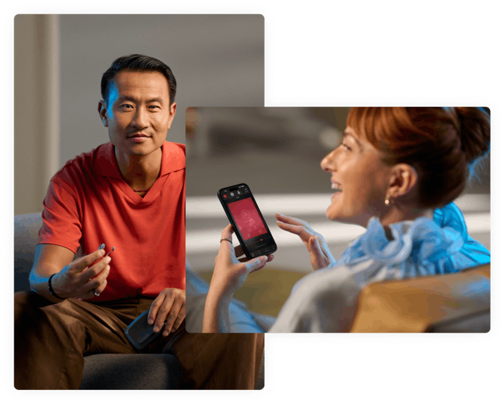
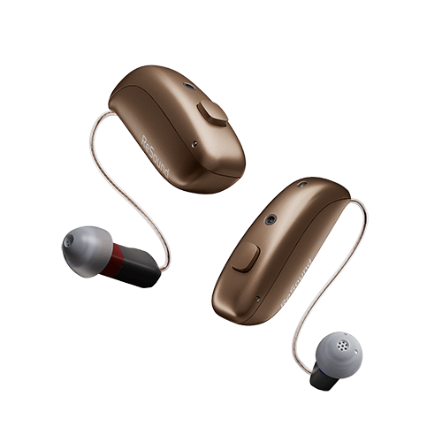
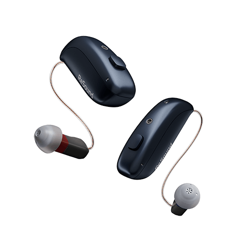

Evaluación auditiva completa
Revisamos tu audición con calma, escuchamos lo que notas en tu día a día y te explicamos los resultados sin tecnicismos.
- Audiometría y valoración personalizada
- Valoración y explicación de resultados
- Recomendación clara
Todo Óptica
Audiología
Evaluación auditiva completa, selección de audífonos Vivia y seguimiento para que la mejora se note en conversaciones reales.
Servicios de audiología
En audiología el seguimiento es tan importante como la adaptación: medimos, probamos, ajustamos y revisamos el resultado.
Revisamos tu audición con calma, escuchamos lo que notas en tu día a día y te explicamos los resultados sin tecnicismos.

Soluciones discretas y conectadas como ReSound Vivia, programadas según tu pérdida auditiva y tu rutina.

Limpieza, revisiones y ajustes para mantener el rendimiento del audífono.
ReSound
ReSound Vivia destaca por su tamaño compacto, conectividad Bluetooth LE Audio y Auracast, y funciones inteligentes para mejorar el habla en ruido. Lo ajustamos en Todo Óptica para que encaje con tus conversaciones, tus espacios y tu rutina.

Audífonos discretos con IA, Bluetooth LE Audio y Auracast.
Un estudio auditivo te ayuda a decidir con datos. Reserva una cita y lo valoramos.
Paseo de Zorrilla 62 · Valladolid
C/ Labradores 22 · Valladolid
Avda. Donostiarra 24 · Madrid